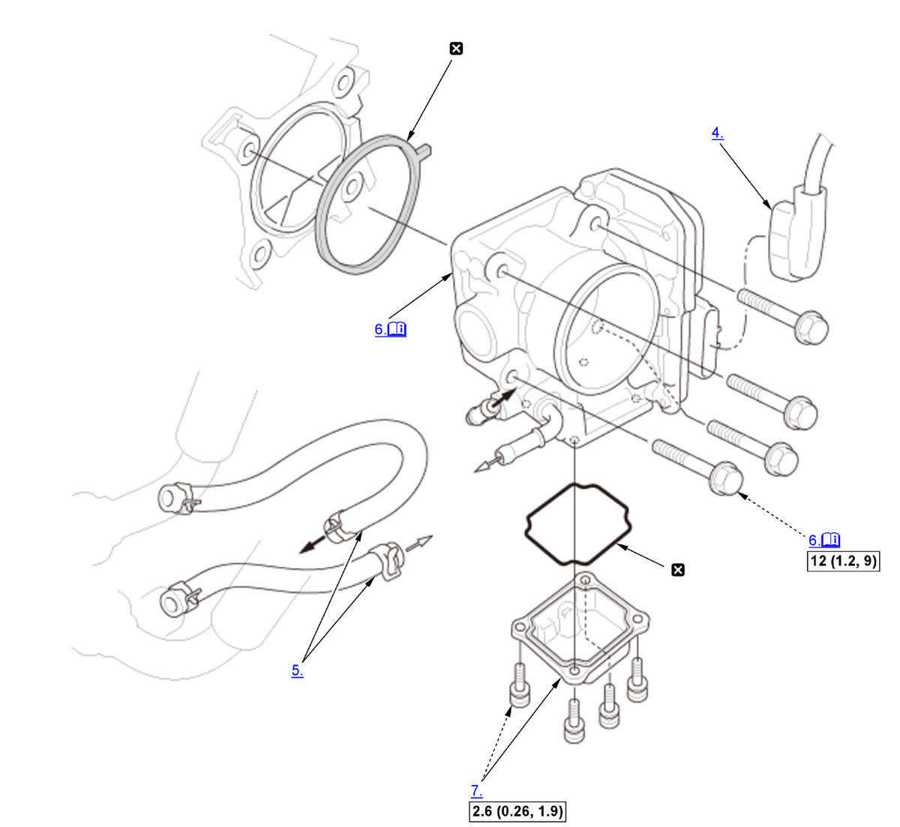

Removal and Installation: Procedure
NOTE:
Numbered call-outs in figure pertain to list numbers in following procedure.

Courtesy of HONDA, U.S.A., INC. |
Detailed information, notes and precautions |
 |
Torque: N.m (kgf.m, lbf.ft) |
 |
Replace |
- HDS - Connect
- TP POSITION CHECK - Select
1. Select the INSPECTION MENU on the HDS. 2. Do the TP POSITION CHECK in the ETCS TEST.
3. Turn the vehicle to the OFF (LOCK) mode.
4. Turn the vehicle to the ON mode, and wait 2 seconds without pressing the accelerator pedal.
- Intake Air Duct F - Remove
- Connector (Throttle Body) - Disconnect
- Water Bypass Hose - Disconnect and Plug
- Throttle Body - Remove
Note for installation
- Tighten the throttle body mounting bolts in a cross pattern in three steps;
-
- Tighten the bolts until they sit on the throttle body.
- Tighten the bolts until the gasket is compressed and both parts are contacted.
- Tighten the bolts to specified torque.
- Throttle Body Lower Case - Remove (If needed)
- All Removed Parts - Install
1. Install the parts in the reverse order of removal with a new gasket and a new O-ring. - Engine Coolant - Refill
- PCM - Reset
- PCM - Idle Learn